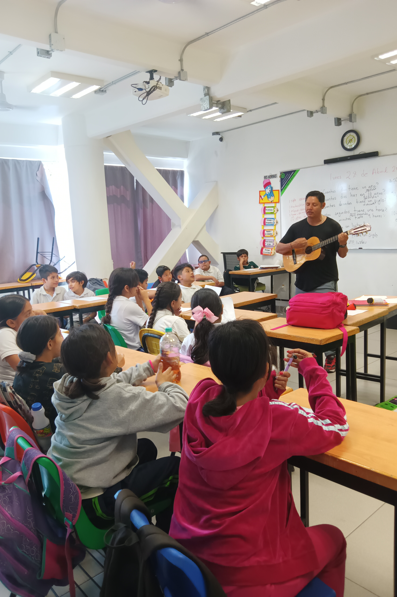
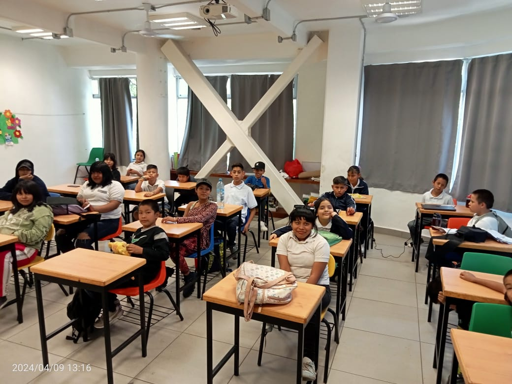

Transformando vidas a través de la educación
Cada programa de MAMA´AC acompaña a niñas, niños y adolescentes, ofreciéndoles las herramientas y oportunidades necesarias para que construyan un futuro lleno de posibilidades.
En MAMA´AC diseñamos programas integrales que atienden las necesidades específicas de cada etapa, desde el primer contacto en las calles hasta la preparación para una vida independiente. Conoce cada uno de ellos:

Trabajo de Calle
Establecemos el primer contacto con niñas, niños y adolescentes en situación de calle o trabajo infantil para regularizar su situación educativa. A través de educadores especializados, generamos vínculos de confianza que permiten iniciar un proceso de transformación.
Programa del Niño Trabajador (PNT)
Un espacio seguro donde niñas, niños y adolescentes fortalecen sus capacidades, recuperan sus derechos y construyen un futuro lleno de oportunidades. Ofrecemos talleres, actividades recreativas y acompañamiento psicosocial.


Escuela de MAMA
Un programa integral que garantiza el acceso a la educación, protege los derechos de niñas, niños y adolescentes y les brinda oportunidades reales de desarrollo. Incluye apoyo escolar, becas, alimentación y seguimiento personalizado.
Vida Independiente
Preparamos a los jóvenes para una vida autónoma y productiva, desarrollando habilidades y competencias para su futuro. Ofrecemos capacitación laboral, asesoría para vivienda, educación financiera y acompañamiento continuo.
.JPG)
Únete a nuestros programas
Tu apoyo hace posible que cada uno de estos programas siga transformando vidas. Elige cómo quieres ayudar.